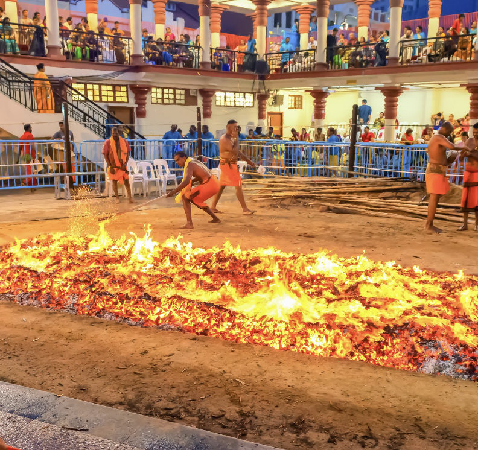
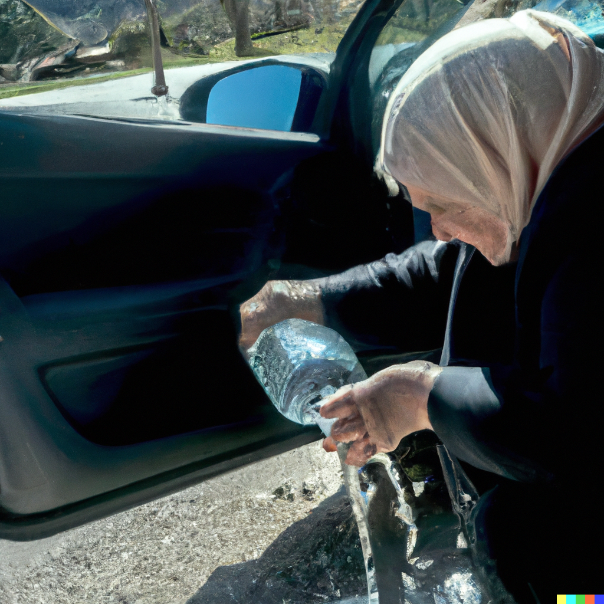

Every year brave souls line up to take an icy dive, called the Polar Plunge!
Now officially a part of Special Olympics this tradition of jumping into the 35-40 Fahrenheit cold sea tied to a rope in winter is an
extremely cool (quite literally) to add to your bucket list!
Running Bare in Freezing Temperatures
South Orkneys, Antartica
In the cool 300 club, peeps enter a sauna heated to 200 degrees Fahrenheit and then run outside into the freezing
temperatures (-100 degrees Fahrenheit or lower) and back to the sauna repeating the process until they have spent a total of 300 seconds
outside! It's a unique way to experience the chills & climate and is popular among locals there.
Cabbies’ Chitchatting
Australia
When you get into a cab it is presupposed that you will start quick chitchat with the driver. If you got off without knowing
his or her life trajectory, you failed it. This is one of the good Australian customs. Drivers in Australia are super-friendly and they understand
that one of the cultural norms there is to chat with passengers. So stay off your phones!
Plumeria Romance
Hawaii
If you're in Hawaii and see a pretty lady wearing a lovely flower behind her ear, there might be more to it than meets the eye, if you know the
hidden local code! A female donning a blooming plumeria flower in her left ear is assumed to be taken! Sorry boys, petals on right ears are the new thing and in for a tête-à-tête.
Stealing each other's wives
Niger, Africa
In the Wodaabe tribe of Niger in West Africa, men are known to steal each other's wives. The Wodaabe's first marriage
is arranged by their parents in infancy and must be between cousins of the same lineage. However, at the yearly Gerewol Festival, Wodaabe men
wear elaborate makeup and costumes and dance to impress the women – and hopefully steal a new polyamorous wife.
Spilling Coffee for Good Luck
Egypt
Coffee and red tea are the most common drinks in Egypt. However, accidentally spilling coffee is good omen.
When someone spills coffee in the surroundings, locals are accustomed to tell people that this is a good sign & will bring fortune in the near future.
Predicting the future is hard for people, no one can do it with 100 percent accuracy, but animals are more predictable.
In the United States, groundhogs are said to predict the future of the winter season's end - if it’s going to stay a bit longer, most often six weeks,
or if it’s going to give way for the upcoming spring. If the ceremonial hog sees a shadow, you're going to have to wait a bit longer for the warm weather.
Write to Santa & Get a Reply
Canada
Not only do children send letters to Santa but, some adults also participate in this magical tradition. Whether you mail Santa a letter
from Tanzania or Turkey, it ends up in Canada and surprisingly reaches Santa! Well, he writes back too. Don’t worry if you can’t speak Finnish as you can send
messages in 13 different languages! Saint Nick’s official address at the North Pole (Postal code: HOH OHO, obviously) is owned by Canada Post.
Having a Saideira
Brazil
You can’t just decide you’re ready to leave the bar and go home, not before a saideira. A saideira is the very last
drink of the night when you’re in a bar and if you and your pals are ready to leave, you will have to order one last saideira and the bill.
El Colacho; Jumping Over Babies
Castrillo De Murcia, Spain
Celebrated each year in the small town of Castrillo de Murcia, the Salto del Colacho is a week-long celebration which culminates
with a man dressed as a devil terrorising locals and jumping over babies. Controversial as far as the Catholic Church is concerned, the celebration is
believed to cleanse the new-borns of their original sin.
Hanging Lost Items in Trees
Germany
Culturally speaking, Germans are also more customarily friendly and helpful than other northern European nations, where the norm is to keep to oneself. In Deutschland, people really tend to look out for one another. If you happen to drop your ‘hand shoe’ in the cold and dreary winter, rest assured that when retracing your steps in search of it, the glove may well be skewered on the branch of a tree. Doing so when encountering an item that appears to be lost is commonplace in German society in order to make it more visible when the owner comes searching for it.Christmas Comes Early
Never seat 13 people at a dinner table
Italy
If you find yourself sitting at a dinner table with 12 other people, then consider yourself unlucky. Having 13 people around the table at mealtime is considered bad luck, as there were 13 people at the Last Supper.
Worm Charming
United Kingdom
This is probably the strangest tradition of all. In this ‘sport’ people compete to ‘charm’ worms – to get them to come out of the ground. You can use tap dancing, music, singing or all kinds of other tactics to help you, but you can’t dig.
Chinese people usually wear (or are forced by their mothers to wear) red underwear on Ben Ming Nian (Zodiac Year of Birth), which is the current year in a cycle of 12 zodiac years. It is believed that wearing red underwear during the whole year may prevent misfortunes from befalling them in the year to come. Why so? There are 12 animals respectively representing the 12 zodiac years. Legend has it that the current animal is on duty in heaven, so it cannot take care of the people of its sign in the human world. That’s when the red underwear comes to the rescue.

Thimithi Fire-walking tradition
Tamil Nadu, India
Also celebrated in countries such as Sri Lanka, Singapore, and Malaysia, Thimithi originated in Tamil Nadu. The festival takes place every year during the months of October and November in honour of Draupati Amman, the wife of the five Pandava brothers in the Mahabharata. Male devotees perform the ritual by walking on a sheet of burning coal while carrying a pot of milk or water on their heads for balance. The practice is a sign of utter devotion to their faith.

Spilling Water After a Passenger Leaves
Turkey
If you are ready for a trip and some Turkish are there to send you off, you may wonder why they have a small cup of water in their
hands. According to the tradition, Turks spill water after somebody leaves as a lucky omen. Quite literally translates to “Just like water, go quick and come
back soon & effortlessly.” Kickass, aint it?
Stealing each other's wives
Niger, Africa
In the Wodaabe tribe of Niger in West Africa, men are known to steal each other's wives. The Wodaabe's first marriage is arranged by their parents in infancy and must be between cousins of the same lineage. However, at the yearly Gerewol Festival, Wodaabe men wear elaborate makeup and costumes and dance to impress the women – and hopefully steal a new wife.
Spilling Coffee for Good Luck
Egypt
Coffee and red tea are the most common drinks in Egypt. However, accidentally spilling coffee is good omen. When someone spills coffee, most of surrounding people tell them that this is a good sign, meaning good things will happen.
Polar Plunge
Antartica
Every year brave souls line up to take an icy plunge, the Polar Plunge! Now officially a part of Special Olympics this tradition of jumping into the 35-40 Fahrenheit cold sea tied to a rope in winter is an extremely cool (quite literally) to add to your bucket list!
Running Bare in Freezing Temperatures
South Pole
The 300 value change in temperature of that many degrees Fahrenheit, the equivalent in Celsius is 167. The idea is to wait until the temperature outside reaches an exceptionally low temperature and go into a sauna where you reach the higher temperature. You then open the door and run around some designated marker wearing only boots so achieving a difference of 300F before re-entering the building to warm up again.
Wearing Red Underwear
Antartica
Chinese people usually wear (or are forced by their mothers to wear) red underwear on Ben Ming Nian (Zodiac Year of Birth), which is the current year in a cycle of 12 zodiac years. It is believed that wearing red underwear during the whole year may prevent misfortunes from befalling them in the year to come. Why so? There are 12 animals respectively representing the 12 zodiac years. Legend has it that the current animal is on duty in heaven, so it cannot take care of the people of its sign in the human world. That’s when the red underwear comes to the rescue.
Thimithi Fire-walking tradition
Tamil Nadu, India
Also celebrated in countries such as Sri Lanka, Singapore, and Malaysia, Thimithi originated in Tamil Nadu. The festival takes place every year during the months of October and November in honour of Draupati Amman, the wife of the five Pandava brothers in the Mahabharata. Male devotees perform the ritual by walking on a sheet of burning coal while carrying a pot of milk or water on their heads for balance. The practice is a sign of utter devotion to their faith.
Cabbies’ Chitchatting
Australia
When you get into a cab it is presupposed that you will start quick chitchat with the driver. If you got off without knowing his or her life trajectory, you failed it. This is one of the good Australian customs. Drivers in Australia are super-friendly and they understand that one of the cultural norms there is to chat with passengers. So stay off your phones!
Plumeria Romance
Hawaii
Usually a female is wearing a flower in her left ear it means she is taken. If she is wearing the flower in her right ear it means she is available.
Hanging Lost Items on Trees
Germany
Culturally speaking, Germans are also more customarily friendly and helpful than other northern European nations, where the norm is to keep to oneself. In Deutschland, people really tend to look out for one another. If you happen to drop your ‘hand shoe’ in the cold and dreary winter, rest assured that when retracing your steps in search of it, the glove may well be skewered on the branch of a tree. Doing so when encountering an item that appears to be lost is commonplace in German society in order to make it more visible when the owner comes searching for it.Christmas Comes Early
Never seat 13 people at a dinner table
Italy
If you find yourself sitting at a dinner table with 12 other people, then consider yourself unlucky. Having 13 people around the table at mealtime is considered bad luck, as there were 13 people at the Last Supper.
Groundhog Predicts How Long Winter Will Last
United States
Predicting the future is hard for people, no one can do it with 100 percent accuracy, but animals are more predictable. In the United States, groundhogs are said to predict the future of the winter season's end - if it’s going to stay a bit longer, most often six weeks, or if it’s going to give way for the upcoming spring. If the ceremonial hog sees a shadow, you're going to have to wait a bit longer for the warm weather.
Write to Santa & Get a Reply
Canada
Whether you mail Santa a letter from Tanzania or Turkey, it ends up in Canada. Saint Nick’s official address at the North Pole (Postal code: HOH OHO, obviously) is owned by Canada Post.
El Colacho; Jumping Over Babies
Castrillo De Murcia, Spain
Celebrated each year in the small town of Castrillo de Murcia, the Salto del Colacho is a week-long celebration which culminates
with a man dressed as a devil terrorising locals and jumping over babies. Controversial as far as the Catholic Church is concerned, the celebration is
believed to cleanse the new-borns of their original sin.
Having a Saideira
Brazil
You can’t just decide you’re ready to leave the bar and go home, not before a saideira. A saideira is the very last
drink of the night when you’re in a bar and if you and your pals are ready to leave, you will have to order one last saideira and the bill.


{kind=link}
{kind=link}
:max_bytes(150000):strip_icc()/GettyImages-56712283-588a61cd5f9b5874ee2381dd.jpg){kind=link}